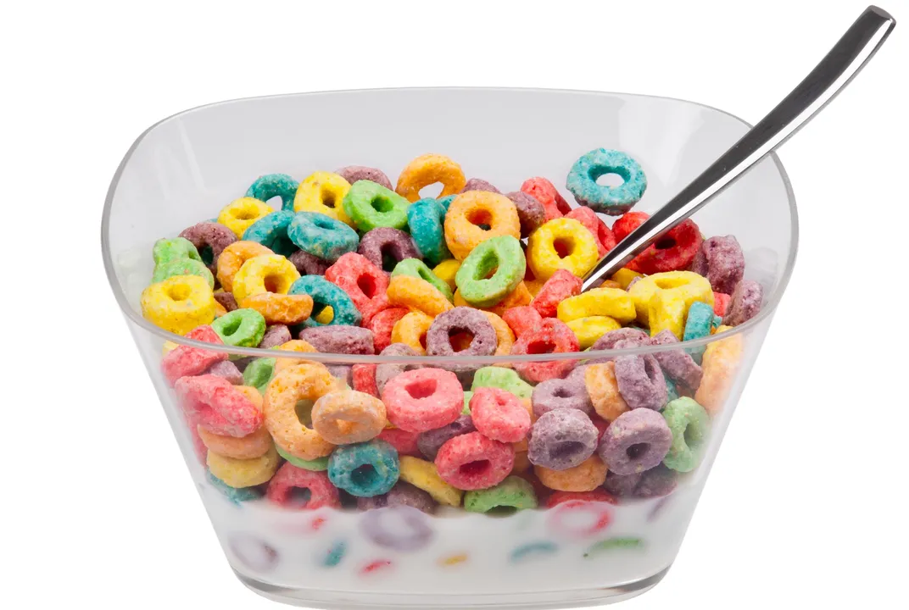
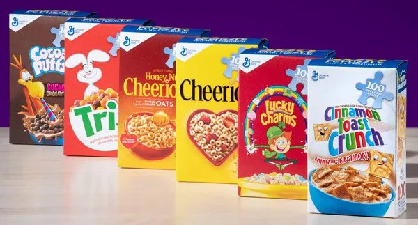
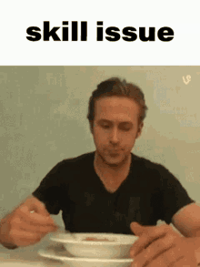

ceral

описание
это рецепт хлопьев с молоком пал. смотри и учись
ингредиенты 
молоко
любые хлопья (в т.ч. cock flakes)
cgjcj, ghbujnjdktybz (modus operandi)
насыпать хлопья в сиску
налить сиску в миску
сладкую писку

ВЕРНУТСЯ